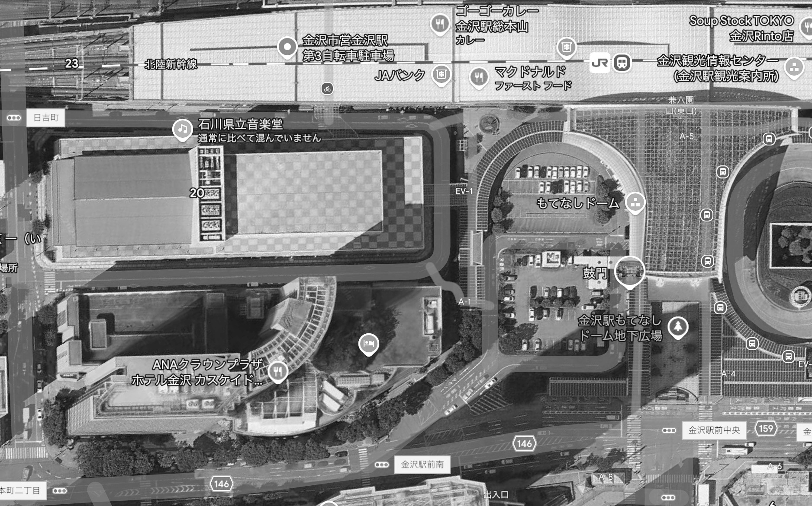
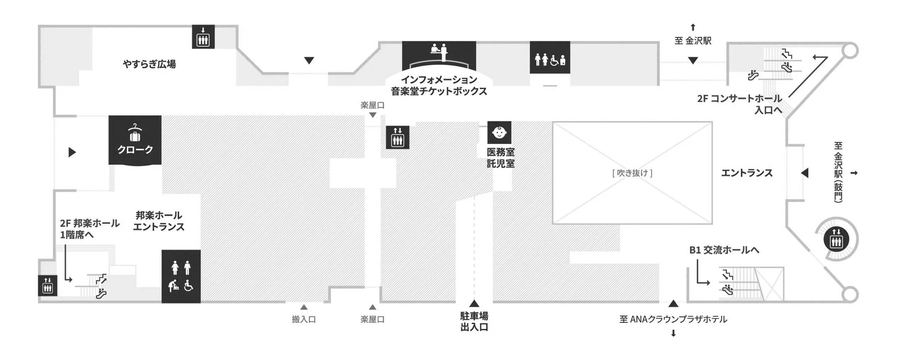

| タイミング | 照明 | スポット | 行燈 | 備考 |
|---|---|---|---|---|
| 18:04 素囃子開始 | OFF | 暗転 | ||
| 素囃子 紹介後 | ON | ON | ステージ照射 | |
| 素囃子終了後 | OFF | OFF | ||
| 片付け後 | ON | ON（司会席） | 徐々に明るく | |
| 18:37 乾杯後 | OFF | |||
| 19:02 太鼓演奏 | OFF | ON | ON | 暗転 |
| 太鼓演奏終了 | ON | OFF | OFF | |
| 19:47 踊り開始 | ON | 会場は暗くしない | ||
| 20:07 次期支部挨拶 | ON | |||
| 20:27 来賓退場 | OFF | 退場演出 |
各テーブルをクリックすると全メンバーが表示されます。もう一度クリックで閉じます。